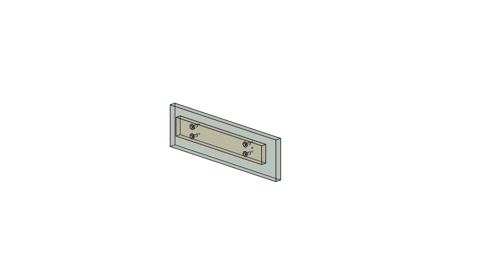
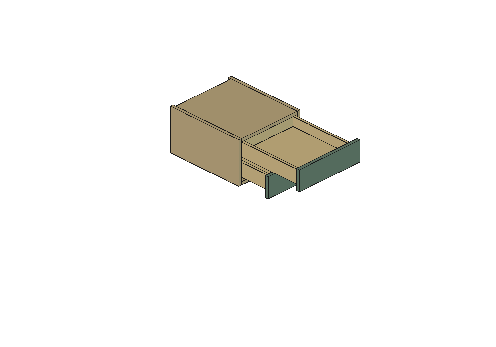

R04 · Fixação simples das frentes
Detalhamento sem reguladores Blum, com conferência de armazenamento e prévia no apartamento completo.
Fixação simplificada conferida geometricamente. Conjunto FGVTN ainda pendente.
O usuário confirmou que ainda não tem o kit nem o gabarito. A condição de aplicar ao principal somente quando tudo estiver correto não foi atendida. A R42 principal permanece preservada; a cópia de integração é explicitamente uma prévia não aprovada.
Arquivos
Estudo R04 no FreeCAD · Apartamento completo com a proposta — prévia não aprovada · Auditoria geométrica · Conferência da integração preparada · Reabertura do estudo.
Construção e testes · Preparação da prévia · R03 histórica, com reguladores agora dispensados.
Fixação adotada no estudo
Cada frente recebe quatro parafusos para madeira/aglomerado4 × 30 mm, cabeça panela, e quatro arruelas largas5,3 × 15 × 1,2 mm. Total das duas gavetas: oito parafusos e oito arruelas. A arruela nominal M5 é usada por seu diâmetro de apoio; o parafuso continua sendo para madeiraØ4, não M5 métrico.
A dianteira interna de16 mm recebe quatro passagensØ8. A frente decorativa de18 mm é alinhada e presa por trás. Os reguladores295.1000 e seus furos cegosØ20 foram eliminados. O modelo R04 parte da madeira intacta da R02, e não de uma frente já furada da R03.
| Conferência | Resultado geométrico |
|---|
| Entrada do parafuso na frente | 12,8 mm nominais, incluindo a ponta; restam5,2 mm até a face externa. Comprimento útil resistente é menor que a penetração total devido à ponta. |
| Cabeça e arruela | Projeção nominal4,1 mm; reserva5 mm. Considerando arruela até1,4 mm e cabeça2,9 mm, restam0,7 mm na reserva. |
| Alinhamento | PassagensØ8 permitem acompanhar o ajuste vertical0–3 mm, com parafusos centrados no meio da faixa. Conferência analítica inclui±0,5 mm horizontal. |
| Passagem e apoio | Com diâmetro de rosca até4,3 mm, folga radial mínima calculada0,269 mm. Arruela com diâmetro externo mínimo14,4 cobre o furo deslocado com margem mínima1,619 mm. |
| Posições | Duas colunas afastadas200 mm; duas linhas afastadas27 mm. Coordenadas completas em Auditoria_R04.json. |
As dimensões do parafuso usam a referência dimensional SPAX de cabeça panela. As peças no CAD são representações nominais simplificadas, sem rosca helicoidal. Não substituir por cabeça escareada: ela não fornece o mesmo apoio sobre a arruela.

Transparência para inspeção. Os furos-piloto na frente serão definidos segundo a chapa real e o fornecedor do parafuso; não há furação-piloto fictícia liberada.
Armazenamento mantido
| Gaveta | R42 original | R04, descontada a reserva das fixações |
|---|
| Inferior | 322 × 359 × 60,4 mm ·6,982 L | 323 × 364 × 60,4 mm ·7,101 L |
| Superior | 322 × 359 × 54 mm ·6,242 L | 323 × 364 × 54 mm ·6,349 L |
Ganho de1,71% nos prismas de referência. A reserva frontal de5 mm já está descontada; não se usa o espaço entre parafusos para inflar o volume. As alturas exigidas foram mantidas. O curso candidato FGVTN continua375 ±3 mm: o acesso ao fundo difere dos400 mm da referência Blum.

Conferência e procedimento de montagem
1.880 verificações programadas, sem colisões não intencionais no escopo analisado. Formas válidas, passagens de parafusos conferidas nas alturas0/1,5/3 mm e por cálculo de envoltória; cobertura das arruelas conferida com dimensões-limite documentadas. A interferência da rosca com a frente é a fixação intencional na madeira e foi registrada separadamente.
Envelopes conservadores contínuos cobrem curso0–378 mm e subida da caixa0–3 mm, movimentos independentes das gavetas, carcaça e demais sólidos do apartamento. Frentes e fixações ficam alinhadas verticalmente após o aperto. Folgas mínimas nominais do conteúdo:1,6 mm sob a frente superior e1 mm sob o topo. Junta entre frentes:2 mm.
- Montar e regular primeiro as guias e caixas com o gabarito correto do kit FGVTN.
- Prender provisoriamente as frentes alinhadas, mantendo a junta de2 mm.
- Marcar os pilotos através das passagens, conforme posição final. Definir piloto e aperto para a chapa e parafuso reais, usando limitador de profundidade.
- Instalar os quatro conjuntos por frente e apertar uniformemente.
- Se a altura da caixa for alterada depois, afrouxar a fixação da frente, realinhar e reapertar. O furo amplo permite ajuste antes do aperto; não é uma articulação que deva deslizar em uso.
- Conferir retenção, fechamento, destravamento e movimento com carga na montagem real.
Não houve cálculo de arrancamento dos parafusos, resistência da chapa ou deformação sob carga. Material real, tolerâncias de corte/furação e aperto ainda precisam ser definidos na fabricação. Esses limites não são substituídos pela ausência de colisão no CAD.
Por que a aplicação definitiva está pendente
A documentação FGVTN consultada confirma as dimensões gerais, curso e regulagem+3 mm. Não fornece o envelope e o gabarito completos do engate convencional para conferir fixação e acesso de destravamento. Não é necessário escrever à Blum para esta solução. Para a FGVTN, basta obter o gabarito/desenho correto ou conferir um kit real; não é obrigatória uma resposta formal do fabricante.
A prévia completa oculta o módulo original do escritório e acrescenta a proposta R04 em um grupo identificado. Foram comparados 1.207 objetos sólidos originais, sem diferenças de volume, número de faces ou posicionamento. A cópia foi salva; o estudo isolado foi reaberto. A prévia completa não foi reaberta nesta etapa. O arquivo principal não foi sobrescrito. Nenhum engate foi inventado ou substituído por uma peça Blum para aparentar conclusão.
Consulta técnica FGVTN disponível, não enviada. A consulta Blum da R03 ficou dispensada pela simplificação.
Fontes
SHA256 principal preservado:
b30ae9ab9c82620ecdab26b2cfae589037954356d515b483b5b6849f76e4bc26
Retomada dos engates · 21/10/2026
Fixação interna mantida conforme confirmação do usuário; frente externa sem parafusos aparentes. A nova busca no produto e no portal de instruções FGVTN não localizou o gabarito completo dos engates convencionais. A regulagem de+3 mm já está documentada.
Consulta técnica enxuta para aprovação — não enviada · Fontes consultadas e resultado. Pedido limitado ao desenho/furação do engate, parafusos, acesso de destravamento e detalhes traseiros do kit54FGOC12400TSX0. Incorporação à R42 continua pendente dessa conferência.
Consulta enviada à FGVTN
O usuário aprovou uma versão curta, enviada pelo Outlook para sac@fgvtn.com.br. Texto efetivamente enviado e confirmação. Os rascunhos anteriores permanecem como histórico. Aguardando resposta técnica; R42 principal preservada.